Aanmelden & afmelden voor het controle team
Om aan te melden als een echt bestuur, ga naar loket.miet.be/handleiding.
Browser: Chrome of Firefox
Voor het uitvoeren van de controle werkt u best met Chrome of Firefox. Indien er hier zich een probleem voordoet, of iets niet werkt, mag u dat zeker melden via support+lblod@redpencil.io.
Locatie: https://controle.loket.lblod.info
Surf naar https://controle.loket.lblod.info. Hier kan u de controle uitvoeren.
U zal gevraagd worden om een login een een username in te voeren. U heeft deze per mail ontvangen. Vul deze in, uw browser zal deze credentials onthouden.
Overzichtspagina
U komt nu terecht op de login pagina voor besturen (http://controle.loket.lblod.info/login). Voor het controle team is er echter een aparte pagina voorzien: pas de link in uw browser aan naar http://controle.loket.lblod.info/mock-login. We raden u aan om deze link in uw bladwijzerbalk te stoppen, zodat u eenvoudig kan switchen van bestuur indien nodig!
Aanmelden met een bestuur
U ziet een zoekveld op de pagina, waar u kan zoeken op de naam van het bestuur. Type bestuur zal niet werken.
In dit geval hebben we op de naam Antwerpen gezocht. Deze zoekterm levert twee pagina's met de volgende zoektermen op:
- provincie
- district
- gemeente
- OCMW
- OCMW-vereniging
- politiezone
- hulpverleningszone
- intercommunales
- autonome provinciebedrijven
- autonome gemeentebedrijven
U kan er voor kiezen om ook op de specifieke naam van het bedrijf te zoeken.
Klik op de naam van het bestuur om u aan te melden als dat bestuur.
Eens u aangemeld bent, krijgt u een overzicht van al de onderdelen waar u toegang tot heeft in het loket. Voor controle navigeert u naar mandatenbeheer.
Afmelden en naar een ander bestuur gaan.
Via de knop Meld u af kan u uit het huidige bestuur gaan.

U wordt naar deze pagina doorverwezen:
Navigeer weer naar https://controle.loket.lblod.info/mock-login om u met een ander bestuur aan te melden. De pop-up die om credentials vraagt zou niet moeten verschijnen, zorg dat u aanvinkt dat uw browser de credentials onthoudt.
Mandatenbeheer voor het controle team
Voor het controle team zijn er extra functionaliteiten voorzien, die we in dit onderdeel gaan bekijken. Voor de uitgebreide benadering van mandatenbeheer, bekijk mandatenbeheer voor besturen, en voor enkele praktische voorbeelden, bekijk de mandatenbeheer scenario's.
Voor de complete handleiding, ga naar loket.miet.be/handleiding.
Overzicht met indicatie Nagekeken
Als controle team krijgt u een extra indicatie in de tabel die toont of een mandataris al nagekeken werd of niet.
Een mandataris die niet nagekeken werd heeft overal een gele badge met een kruis in staan.
Een mandataris die nagekeken werd krijgt overal een groene badge met een checkmark in.
Kijk een mandataris na door op Bewerk te klikken bij een van de mandaten.
De mandaten van een mandataris aanpassen
De zijbalk zal openen, en al de mandaten van de mandataris tonen.
Klik Pas aan bij een van de mandaten om dat mandaat te bewerken.
U krijgt de keuze tussen twee opties:
- Corrigeer fouten: Bij de controle zal u vaak foutjes moeten aanpassen, die niet correct werden ingegeven op voorhand. Indien u een fout wil aanpassen — en dus geen wijziging gedurende het mandaat (de andere optie) — kies deze optie.
- Wijzig einde mandaat: In het geval dat de gegevens correct zijn, maar er een wijziging gedurende het mandaat zich voordeed — zoals een wijziging van status, fractie, rangorde of bevoegdheid — kies deze optie.
Start daarna een nieuw mandaat met de gewijzigde situatie.
1. Corrigeer fouten
In dit voorbeeld, ontbreekt er bij Luc Deneyer uit de gemeente Bever de fractie in het mandaat gemeenteraadslid.
1.1 Klik op Corrigeer
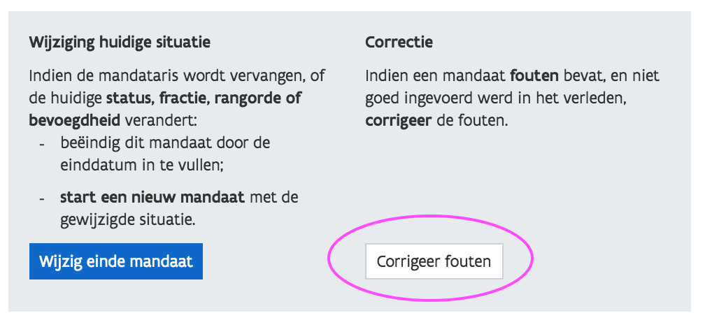
1.2 Scroll naar het juiste veld en vul in: Fractie, CD&V
1.3 Scroll naar de knoppen onderaan het grijze kaartje, en klik op Corrigeer informatie. Voor meer informatie bekijk Bewerken om meer informatie over dit topic te vinden.
1.4 De informatie werd aangepast.
In de tabel en in de zijbalk kan u de aanpassing zien.
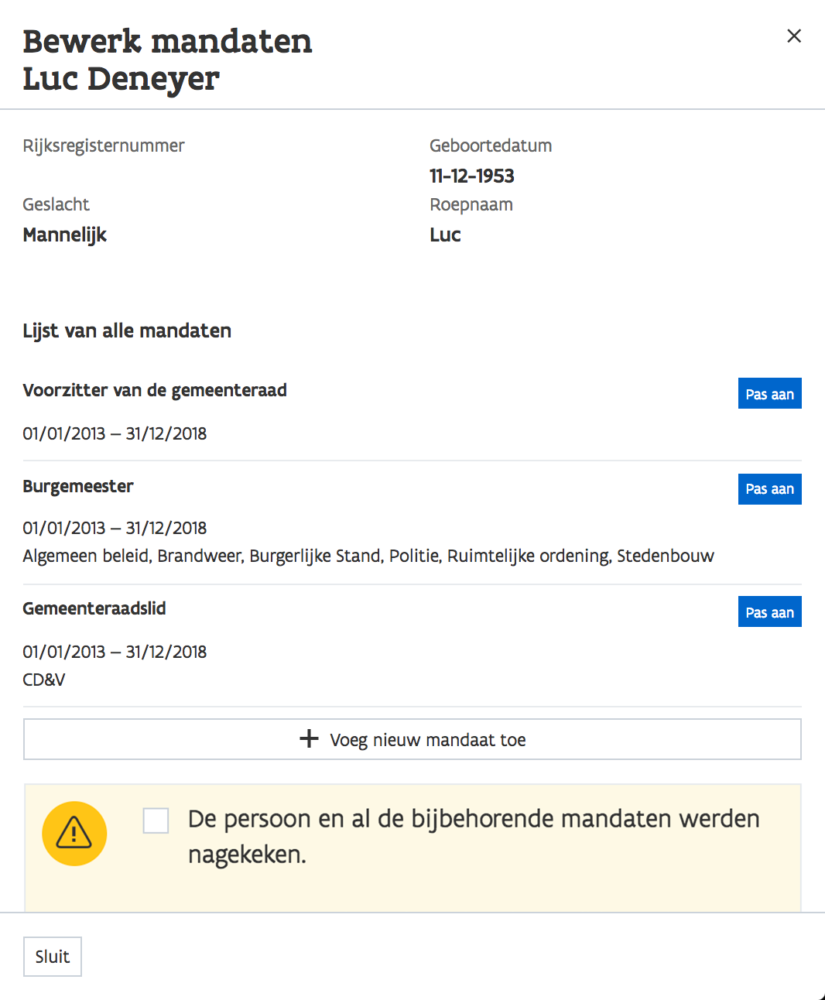
2. Wijzig einde mandaat
Indien het om een wijziging gaat gedurende het mandaat, gebruikt u deze functionaliteit. U beëindigd het oorspronkelijke mandaat, en start een nieuw mandaat met de nieuwe situatie. Op deze manier blijft er een record blijft bestaan van de situatie van het vorige mandaat.
1.1 Klik op Wijzig einde mandaat.
1.2 Pas het einde van het mandaat aan, en klik Wijzig einde mandaat.
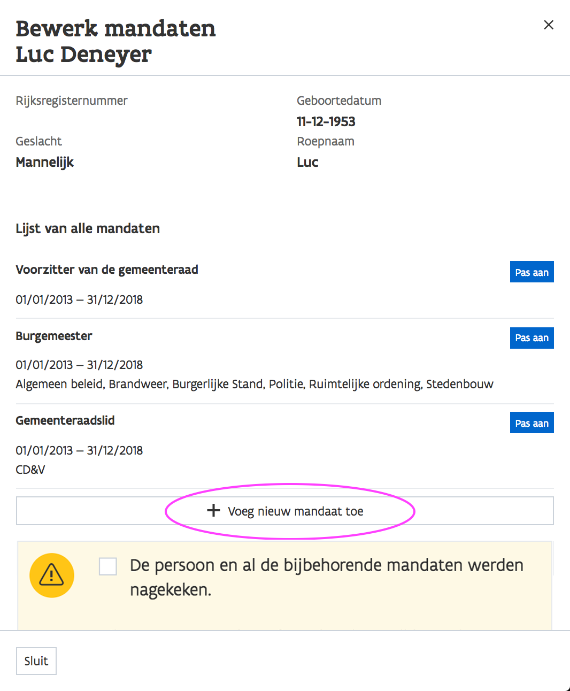
Aanduiden dat de mandaten van de mandataris nagekeken werden
Eens u alle mandaten heeft nagekeken van de mandataris, scroll naar beneden en vink De persoon en al de bijbehorende mandaten werden nagekeken aan.
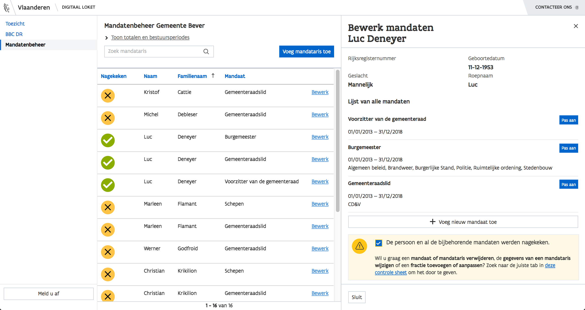
In het overzicht verandert het icoon in de kolom Nagekeken voor de nagekeken mandataris.
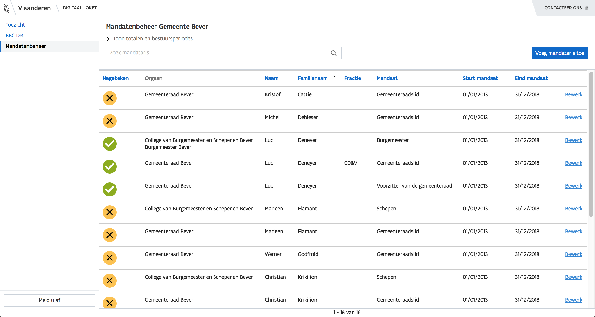
Een mandataris of mandaat verwijderen
Opgelet
Een mandataris of mandaat verwijderen kan niet. Gelieve deze door te geven op deze spreadsheet, onder het tabblad Persoonsgegevens aanpassen.
De persoonlijke gegevens van een mandataris aanpassen
Een fractie ontbreekt, moet gecorrigeerd of verwijderd worden
Opgelet
Een ontbrekende fractie toevoegen of een fractie corrigeren kan niet. Gelieve deze door te geven op deze spreadsheet, onder het tabblad Fractie ontbreekt.
Een mandataris toevoegen
Binnen de lijst
Bekijk het onderdeel Een nieuwe mandataris toevoegen: binnen de lijst van verkozenen.
Buiten de lijst
Bekijk het onderdeel Een nieuwe mandataris toevoegen: een mandataris buiten de lijst van verkozenen toevoegen.
Opgelet
Indien u het rijksregisternummer niet kan terugvinden, gelieve dit door te geven op deze spreadsheet, onder het tabblad Ontbrekende gegevens.
Persoonlijke gegevens van een mandataris ontbreken.
Gelieve deze door te geven op deze spreadsheet, onder het tabblad Ontbrekende gegevens.
https://docs.google.com/spreadsheets/u/1/d/13D38ZLH0toLlJ2u7lBwywUThM77ze1O6YUOMFL9T2lQ/edit?usp=drive_web&ouid=116393943963382490089
Mandatenbeheer voor besturen
U kan via de zijbalk of via het kaartje naar het mandatenbeheer navigeren. Hier kan mandatendatabank beheerd worden voor de gemeenten, OCMW’s, districten en provincies.

Hoe werkt het
Overzicht
In het overzicht kan u de mandaat voor het bestuur waar u mee bent ingelogd bekijken. Voor elk mandaat is er een nieuwe rij in de tabel voorzien.

Totalen
Per bestuur staat er een limiet op het aantal mandaten. De som van de huidige situatie kan u bovenaan vinden, onder de knop Toon totalen en bestuursperiodes.

Leden aantallen
Momenteel wordt het maximum aantal leden niet meegenomen in deze applicatie. Besturen dienen zelf het juiste aantal onder controle te houden.
Bewerken
Elk mandaat kan bewerkt worden, door op een rij op "bewerk" te klikken.

Een zijbalk schuift open, met al de mandaten voor de betreffende mandataris. U krijgt dus meerdere rijen van de tabel te zien in de zijbalk.

Eens u besloten heeft om een mandaat aan te passen, krijgt u de vraag of u de huidige situatie wil aanpassen, of fouten wil corrigeren. Dit onderscheid is van belang om een correctie historiek bij te kunnen houden.
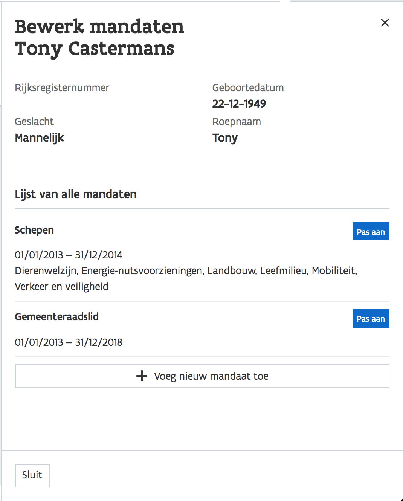
Bij het aanpassen van een situatie kan u enkel het huidige mandataat beëindigen — daarna dient u een nieuw mandaat te starten. Op deze manier worden alle records bijgehouden, en kan u de historiek van een mandataris bijhouden.

Bij het corrigeren van fouten mag alles aangepast worden. Het record wordt hier overschreven, en de historiek wordt aangepast.
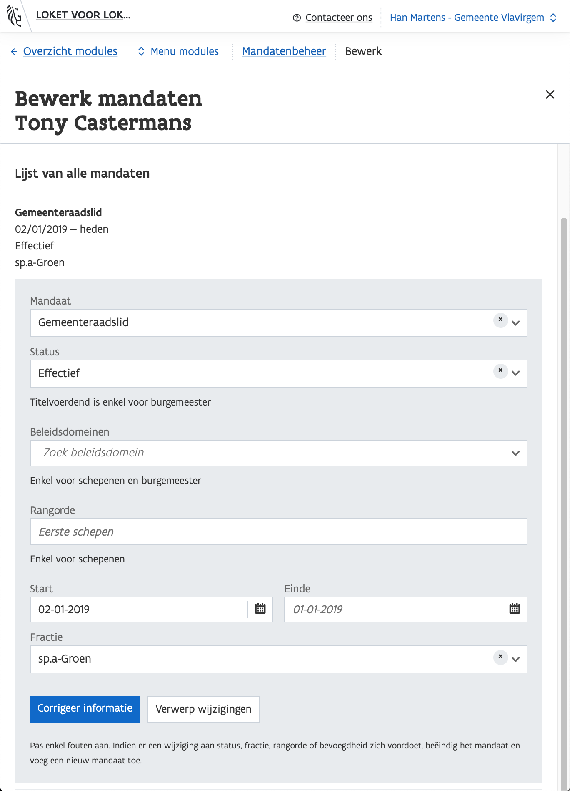
Een nieuwe mandataris toevoegen: binnen de lijst van verkozenen
Via de knop rechtsboven Voeg mandataris toe kan u een nieuwe mandataris toevoegen.

U kan zoeken op voornaam, familienaam, rijksregisternummer of een combinatie van die drie zoekvelden.
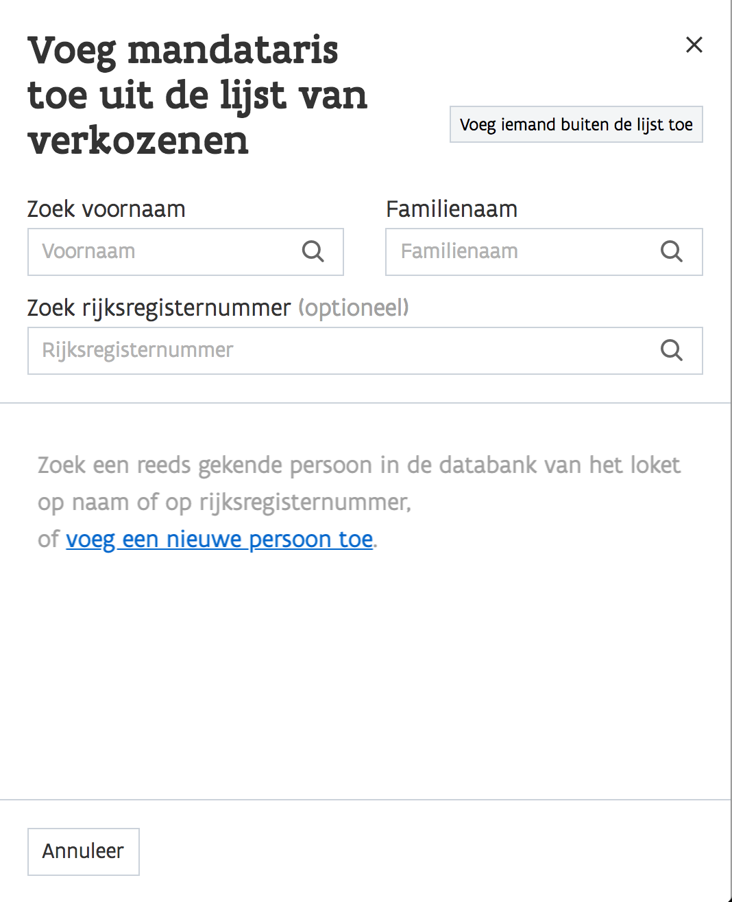
U krijgt een overzicht van de personen op de lijst die overeenkomen met uw zoekterm(en). De link "details" geeft toegang tot meer details over de persoon in kwestie.

Om een mandaat toe te voegen aan de persoon, klikt up op Voeg nieuw mandaat toe.

Daar krijgt u de optie om verschillende mandaten toe te kennen.

Verschillende mandaten
In de dropdown "mandaat" kan u kiezen uit verschillende mandaten, afhankelijk van het bestuur waar u mee bent ingelogd.
Vul enkel de velden in die relevant zijn voor dat mandaat.
Gemeenteraadslid
Voor het mandaat gemeenteraadslid is voert u het mandaat, de start, het einde en de fractie in.

Voorzitter van de gemeenteraad
Voor het mandaat voorzitter van de gemeenteraad vult u het mandaat, de start, het einde en de fractie in.

Burgemeester
Voor het mandaat burgemeester voert u het mandaat, de status, de start, het einde en de fractie in.

Burgemeester: status
De statussen kunnen zijn: effectief (dat is de standaard), titelvoerend, verhinderd of waarnemend.
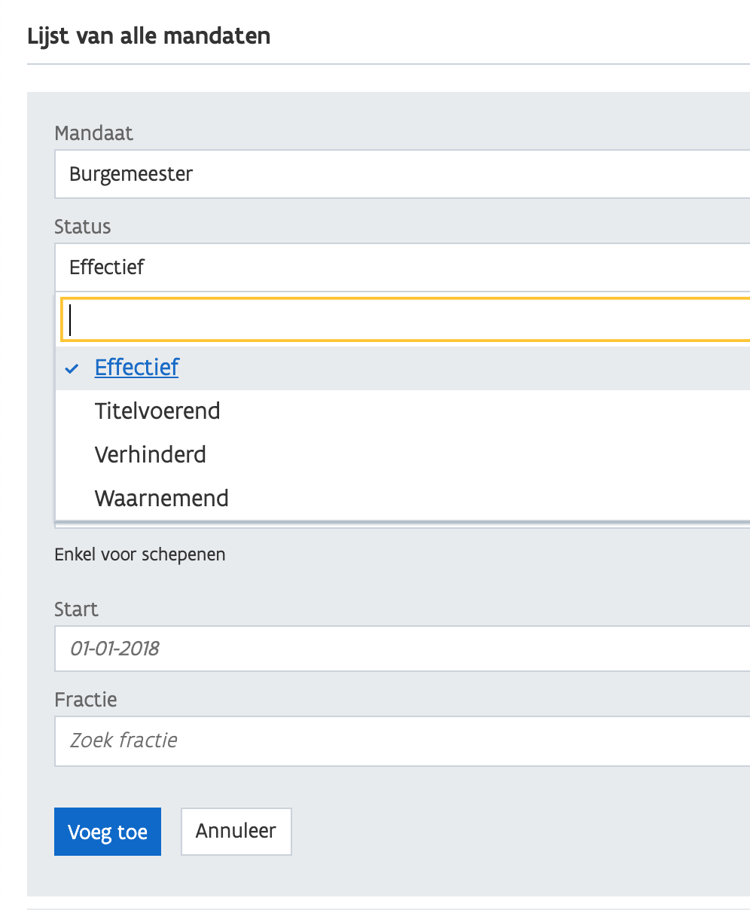
Schepen
Voor het mandaat schepen voert u het mandaat, de bevoegdheden, de rangorde, de start, het einde en de fractie in.
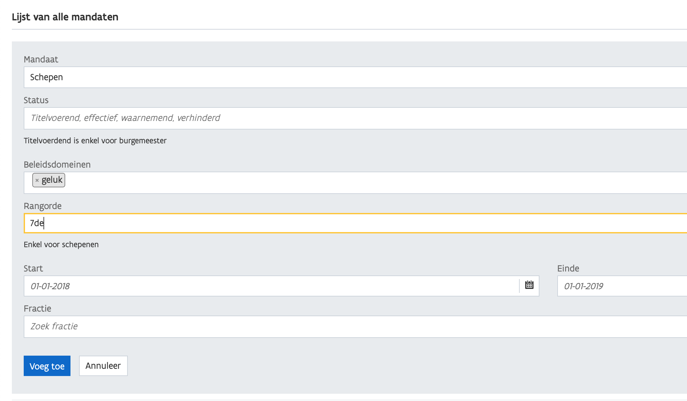
Een nieuwe mandataris toevoegen: een mandataris buiten de lijst van verkozenen toevoegen
Het kan gebeuren dat een persoon buiten de lijst van verkozenen toegevoegd moet worden. Dat kan met de knop rechtsboven Voeg iemand buiten de lijst toe.

U kan de persoon in kwestie toevoegen door voornaam, familienaam, roepnaam, rijksregisternummer, geboortedatum en geslacht in te vullen.
Opgelet: u kan deze gegevens achteraf niet meer wijzigen.
Vervolgens kan u net zoals bij de andere mandatarissen een mandaat toevoegen.

De velden voor het toevoegen van een mandaat zijn hetzelfde als bij een mandataris binnen de lijst van verkozenen.

Een mandaat verwijderen of mandataris aanpassen
Een mandaat verwijderen
Een mandaat verwijderen kan momenteel niet, omdat alle records bijgehouden worden. Indien u toch per abuis toch een foutief mandaat heeft toegevoegd, of er een heeft ontdekt, gelieve het door te geven aan LoketLokaalBestuur@vlaanderen.be.
Persoonlijke gegevens van een mandataris aanpassen
Gegevens van een mandataris aanpassen kan niet. Indien u een fout heeft ontdekt (schrijffout, geen roepnaam, rijksregisternummer, geslacht...), gelieve dit door te geven aan LoketLokaalBestuur@vlaanderen.be.
Mandatenbeheer scenario's
Scenario: vervanging schepen
Gender schepen (artikel 43, §3 DLB), waarbij de laatste schepen in rang vervangen wordt door het gemeenteraadslid van dezelfde lijst met de meeste naamstemmen.
Naamstemmen
Naamstemmen worden nu niet opgenomen in het huidige loket. Gelieve hier rekening mee te houden.
Genderbalans
De genderbalans wordt momenteel niet opgenomen in het loket. Gelieve hier rekening mee te houden.
Leden aantallen
Er staat geen check op het aantal leden. Gelieve deze cijfers in het oog te houden.
-
Aanmelden
Meld u aan als een gemeente en navigeer naar mandatenbeheer.

-
Zoek persoon 1
U kan de juiste persoon zoeken door de naam of achternaam in het zoekveld te typen, of door te sorteren op mandaat in de tabel.

Geslacht kan u bovenaan in de zijbalk terugvinden, rangorde en lijst kan u onder het mandaat in de zijbalk terugvinden.
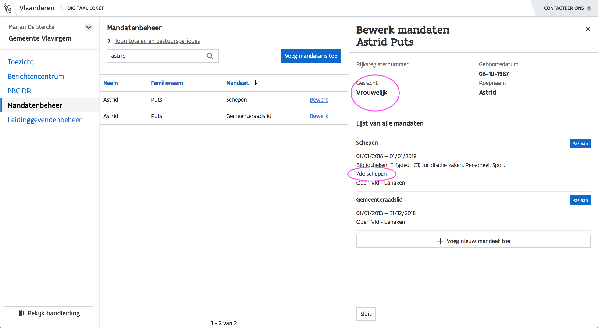
Voorlopig kan men niet zoeken op rangorde, enkel op voornaam en familienaam van de mandataris. U kan wel sorteren op mandaat.
Klik op de blauwe naam in de kolom om te sorteren. Een pijltje zal verschijnen met de richting.
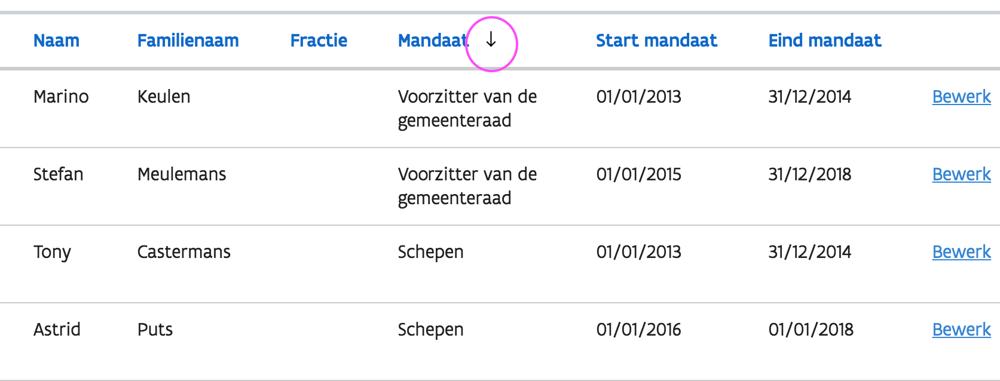
-
Mandaat schepen beëindigen van persoon 1
Zoek het mandaat Schepen, en klik Pas aan.

Kies Wijzig einde mandaat — het gaat hier om een wijziging in het mandaat, niet om een correctie, aangezien het mandaat van de persoon in kwestie stopgezet wordt.

Beëindig het mandaat, door het einde aan te passen naar de datum waarop het mandaat afloopt.
Het record wordt bijgehouden. Het wordt niet meer meegeteld in de huidige totalen bovenaan de tabel op de overzichtspagina indien het mandaat verlopen is.
-
Zoek persoon 2
Zoek persoon 2, die persoon 1 moet vervangen. Dat kan in de tabel of via de zijbalk (voeg mandataris toe). Indien de persoon niet op de lijst staat, kan u deze toevoegen buiten de lijst.
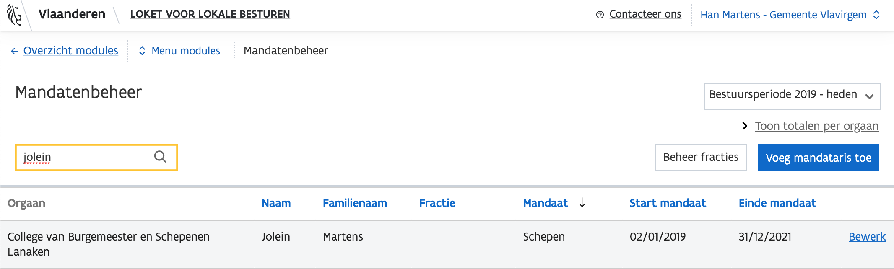
Klik op Bewerk, en vervolgens op Voeg nieuw mandaat toe om een mandaat toe te voegen aan de mandataris.
Geslacht kan u bovenaan in de zijbalk terugvinden, rangorde en lijst kan u onder het mandaat in de zijbalk terugvinden.
Naamstemmen worden niet opgenomen in het mandatenbeheer — raadpleeg daarvoor een andere bron.
Genderbalans
De genderbalans wordt momenteel niet opgenomen in het loket. Gelieve hier rekening mee te houden.
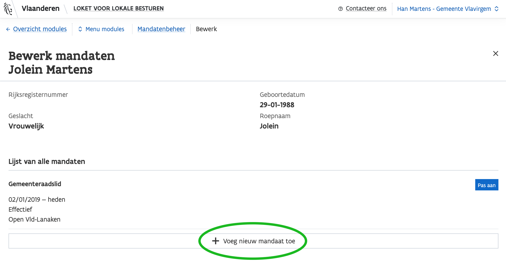
-
Persoon 2 instellen als opvolger mandaat schepen van persoon 1
Kies Schepen en vul de gevraagde velden in met de juiste beleidsdomeinen, rangorde, start- en einddatum en fractie.

De gegevens werden opgeslagen in de databank, en zijn nu raadpleegbaar in zowel de tabel als in de zijbalk.

Scenario: vervanging enkel in Raad voor Maatschappelijk Welzijn
Lid van de Raad voor Maatschappelijk Welzijn (artikel 68, §2 DLB), waarbij de samenstelling van de Raad voor Maatschappelijk Welzijn afwijkt van die van de Gemeenteraad (lid blijft Gemeenteraads-lid, maar wordt in de Raad voor Maatschappelijk Welzijn vervangen).
-
Aanmelden
Meld u aan als OCMW en navigeer naar mandatenbeheer.
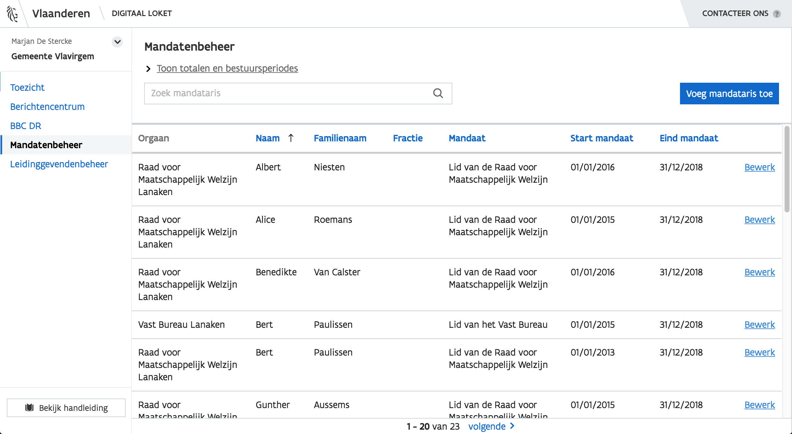
-
Zoek persoon 1
U kan de juiste persoon zoeken door de naam of achternaam in het zoekveld te typen, of door te sorteren op mandaat in de tabel.
Zoek persoon 1 in de tabel en klik op Bewerk. Geslacht kan u bovenaan in de zijbalk terugvinden, rangorde en lijst kan u onder het mandaat in de zijbalk terugvinden.
Genderbalans
De genderbalans wordt momenteel niet opgenomen in het loket. Gelieve hier rekening mee te houden.

U kan ook sorteren op mandaat. Klik op de blauwe naam in de kolom om te sorteren. Een pijltje zal verschijnen met de richting.
Op Bewerk klikken opent een zijbalk waarin u al de mandaten van de mandataris kan zien.

-
Mandaat Lid van de Raad voor Maatschappelijk Welzijn beëindigen van persoon 1
Zoek het mandaat Lid van de Raad voor Maatschappelijk Welzijn, en klik Pas aan.
Kies Wijzig einde mandaat — het gaat hier om een wijziging in het mandaat, niet om een correctie, aangezien het mandaat van de persoon in kwestie stopgezet wordt.

Beëindig het mandaat, door het einde aan te passen naar de datum waarop het mandaat afloopt.
Het record wordt bijgehouden. Het wordt niet meer meegeteld in de huidige totalen bovenaan de tabel op de overzichtspagina indien het mandaat verlopen is.
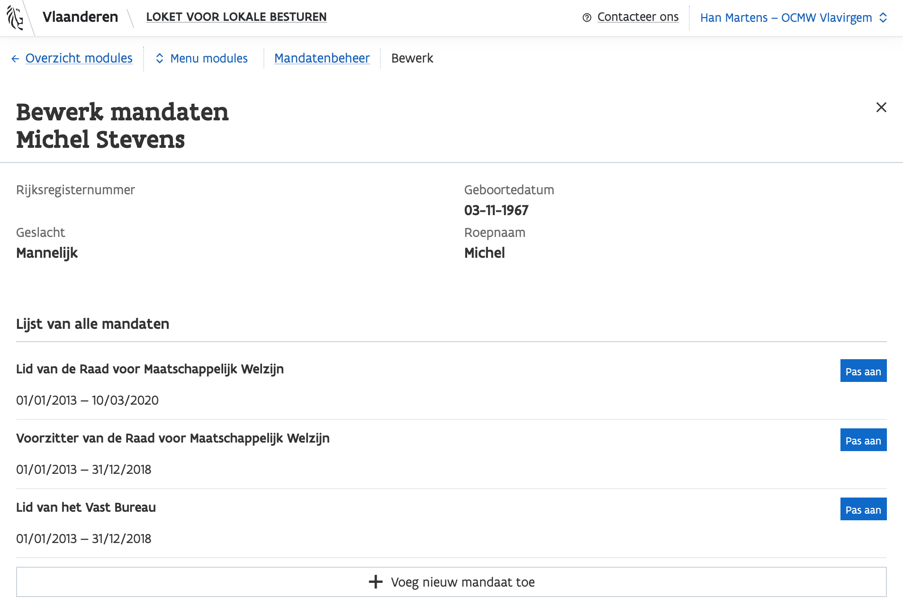
-
Zoek persoon 2
Zoek persoon 2, die persoon 1 moet vervangen. Dat kan via de tabel of via de zijbalk (voeg mandataris toe).
Het is mogelijk dat een persoon niet te vinden is in de tabel. Klik dan op "Voeg mandataris toe" om de persoon te zoeken. Indien deze niet opdaagt in de lijst, voeg een persoon toe buiten de lijst.
Genderbalans
De genderbalans wordt momenteel niet opgenomen in het loket. Gelieve hier rekening mee te houden.
-
Persoon 2 instellen als opvolger mandaat Lid van de Raad voor Maatschappelijk Welzijn van persoon 1
Voeg een nieuw mandaat toe aan persoon 2.

Voeg het mandaat Lid van de Raad voor Maatschappelijk Welzijn toe aan persoon 2, en vul de gevraagde velden met het juiste mandaat, de start- en einddatum en de fractie.

-
Overige mandaten worden behouden
Persoon 1 kan zijn of haar andere mandaten gewoon behouden, ook in de Gemeenteraad.


Een titelvoerend burgemeester met waarnemend burgemeester en opvolger.
Scenario: Een titelvoerend burgemeester met een einddatum en opvolger. De titelvoerende en waarnemende burgemeester worden opgevolgd door een effectieve burgemeester.
-
Zoek persoon 1
Zoek persoon 1 met mandaat burgemeester, en klik op Bewerk. Dat opent een zijbalk waarin u al de mandaten van de mandataris kan zien.


-
Einddatum oud mandaat burgemeester effectief wijzigen van persoon 1
Zoek het mandaat Burgemeester, en klik Pas aan.

Kies vervolgens Wijzig einde mandaat — het gaat hier om een wijziging in het mandaat, niet om een correctie, aangezien het mandaat van de persoon in kwestie stopgezet wordt.

Beëindig het mandaat, door het einde aan te passen naar de datum waarop het mandaat afloopt.
-
Voeg een nieuw mandaat burgemeester titelvoerend toe aan persoon 1
Vervolgens, voeg een nieuw mandaat toe aan persoon 1 als burgemeester, met status titelvoerend.

De records worden bijgehouden. Het wordt niet meer meegeteld in de huidige totalen bovenaan de tabel op de overzichtspagina indien het mandaat verlopen is. Titelvoerende en waarnemende burgemeesters worden meegenomen in de totalen bovenaan de tabel op de overzichtspagina (indien ze nog niet verlopen zijn).
-
Zoek persoon 2
Zoek persoon 2 die waarnemend burgemeester zou moeten worden, en klik op Bewerk. Dat opent een zijbalk waarin u al de mandaten van de mandataris kan zien.


-
Voeg mandaat het burgemeester waarnemend toe aan persoon 1
Voeg het mandaat burgemeester toe, met status waarnemend, aan persoon 2. Vul ook de andere velden in — met dezelfde einddatum als persoon 1.
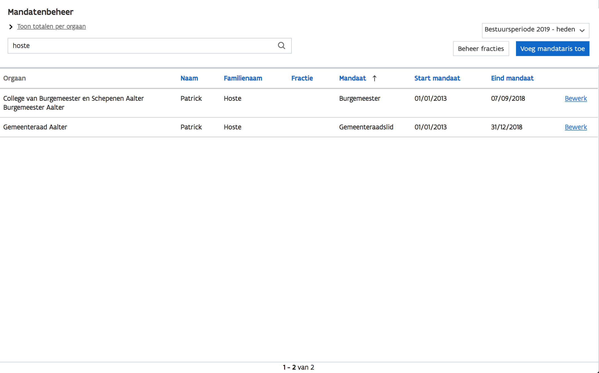
De records worden bijgehouden. Het wordt niet meer meegeteld in de huidige totalen bovenaan de tabel op de overzichtspagina indien het mandaat verlopen is. Titelvoerende en waarnemende burgemeesters worden meegenomen in de totalen bovenaan de tabel op de overzichtspagina (indien ze nog niet verlopen zijn).
-
Zoek persoon 3
Zoek persoon 3, die de opvolger zal zijn — en klik op Bewerk. Dat opent een zijbalk waarin u al de mandaten van de mandataris kan zien.


-
Voeg het mandaat burgemeester effectief aan persoon 3 toe
Voeg het mandaat burgemeester toe (effectief), met als startdatum het moment waarop persoon 1 en 2 hun mandaat beëindigd wordt.
Voeg het mandaat "burgemeester" toe aan persoon 3.
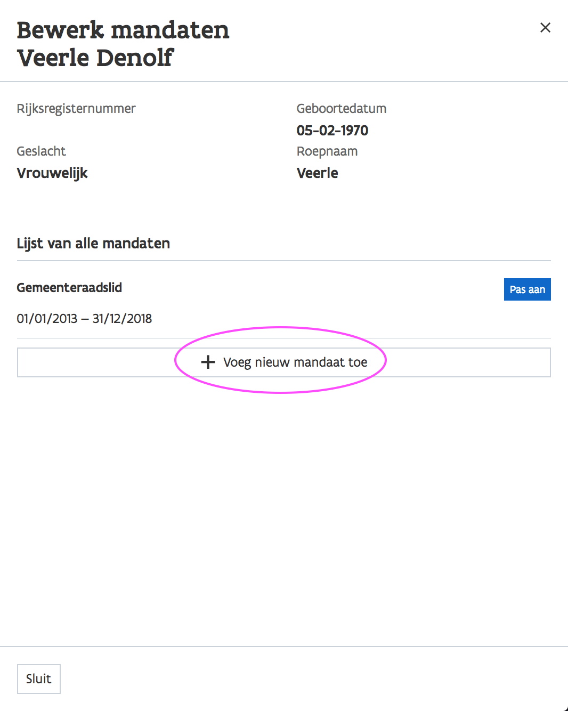
Vul ook de andere velden in: status effectief, beleidsdomeinen en als startdatum de einddatum van de mandaten van persoon 1 en persoon 2, en de fractie.

De records worden bijgehouden. Het wordt nog niet meegeteld in de huidige totalen bovenaan de tabel op de overzichtspagina indien het mandaat nog niet gestart is.
Een gemeenteraadslid neemt ontslag, maar behoudt andere mandaten.
Een lid van de gemeenteraad/RMW dat ontslag neemt als raadslid maar in het Bijzonder Comité voor de Sociale Dienst (BCSD) blijft zitten.
-
Aanmelden
Meld u aan als OCMW en navigeer naar mandatenbeheer.
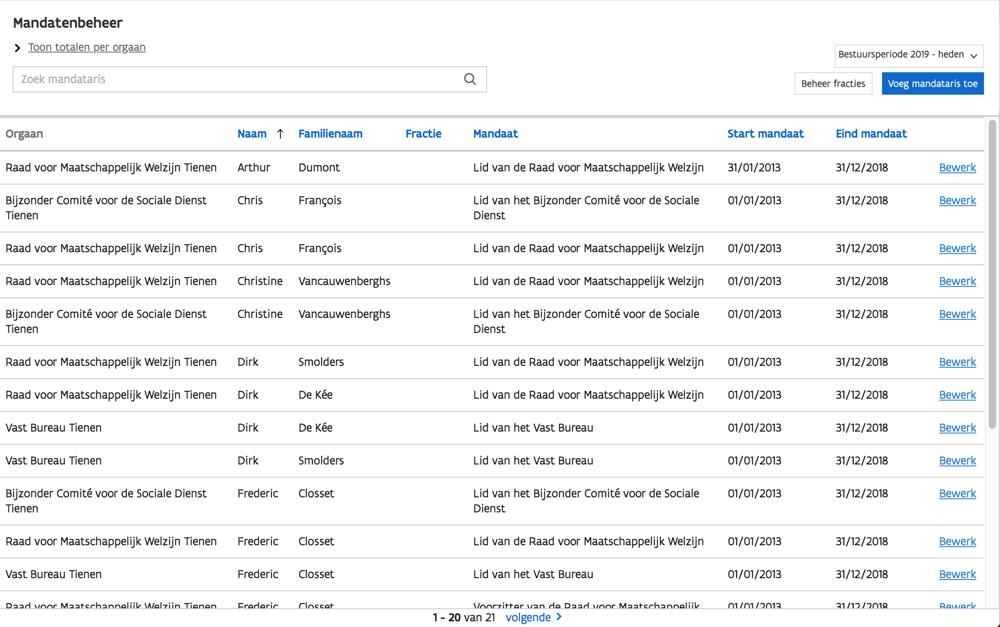
-
Zoek persoon 1
Zoek het raadslid in de tabel en klik Bewerk. Dat opent een zijbalk waarin u al de mandaten van de mandataris kan zien.


-
Mandaat gemeenteraadslid beëindigen van persoon 1
Klik op Pas aan bij Gemeenteraadslid om het mandaat te beëindigen.
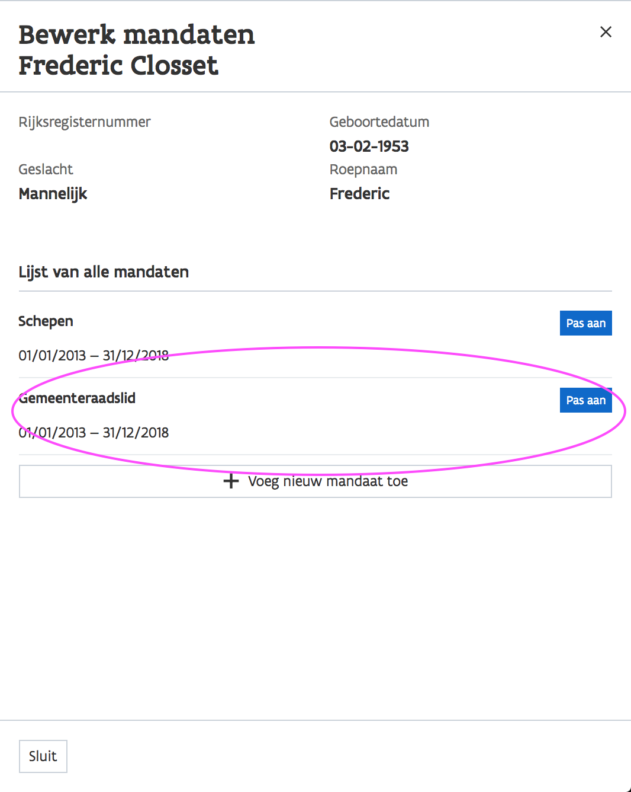
Kies Wijzig einde mandaat — het gaat hier om een wijziging in het mandaat, niet om een correctie, aangezien het mandaat van de persoon in kwestie stopgezet wordt.

Beëindig het mandaat, door het einde aan te passen naar de datum waarop het mandaat afloopt.
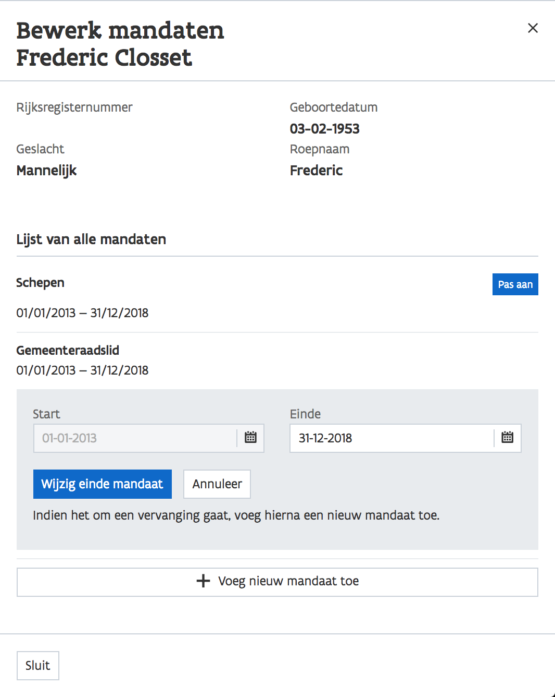
Het record wordt bijgehouden. Het wordt niet meer meegeteld in de huidige totalen bovenaan de tabel op de overzichtspagina indien het mandaat verlopen is.
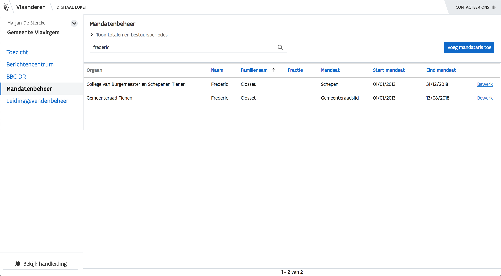
-
Andere mandaten belijven bestaan.
Andere mandaten kunnen blijven bestaan, ook in andere besturen zoals het OCMW.

Wissel Burgemeester-Schepen
Een wissel burgemeester-schepen, waarbij ze elkaar als opvolger hadden aangeduid, burgemeester wordt schepen, schepen burgemeester
-
Aanmelden
Meld u aan als een gemeente en navigeer naar mandatenbeheer.

-
Zoek persoon 1
Zoek de burgemeester in de tabel door te sorteren op mandaat en klik Bewerk. Dat opent een zijbalk waarin u al de mandaten van de mandataris kan zien.
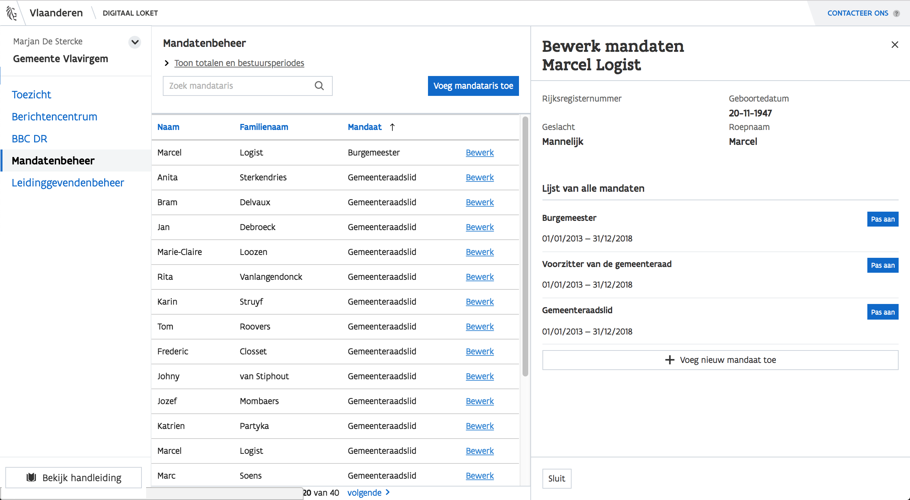
-
Beëindig mandaat burgemeester van persoon 1
Kies Wijzig einde mandaat — het gaat hier om een wijziging in het mandaat, niet om een correctie, aangezien het mandaat van de persoon in kwestie stopgezet wordt.
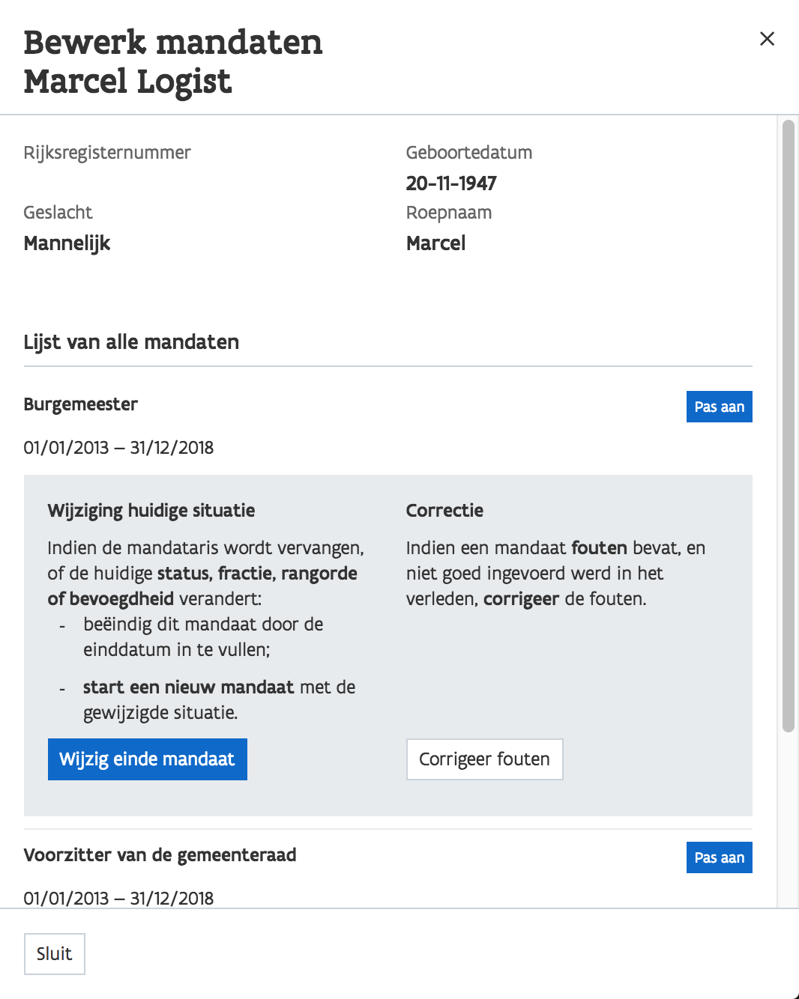
Beëindig het mandaat, door het einde aan te passen naar de datum waarop het mandaat afloopt.

Het mandaat werd aangepast. De totalen zullen de huidige situatie reflecteren.
-
Voeg een nieuw mandaat schepen toe aan persoon 1
Aangezien de burgemeester na dit mandaat schepen zal worden, Voeg een nieuw mandaat toe

Kies Schepen en vul de gevraagde velden in met de juiste beleidsdomeinen, rangorde, start- en einddatum en fractie. De startdatum zal de einddatum van het burgemeesterschap zijn.
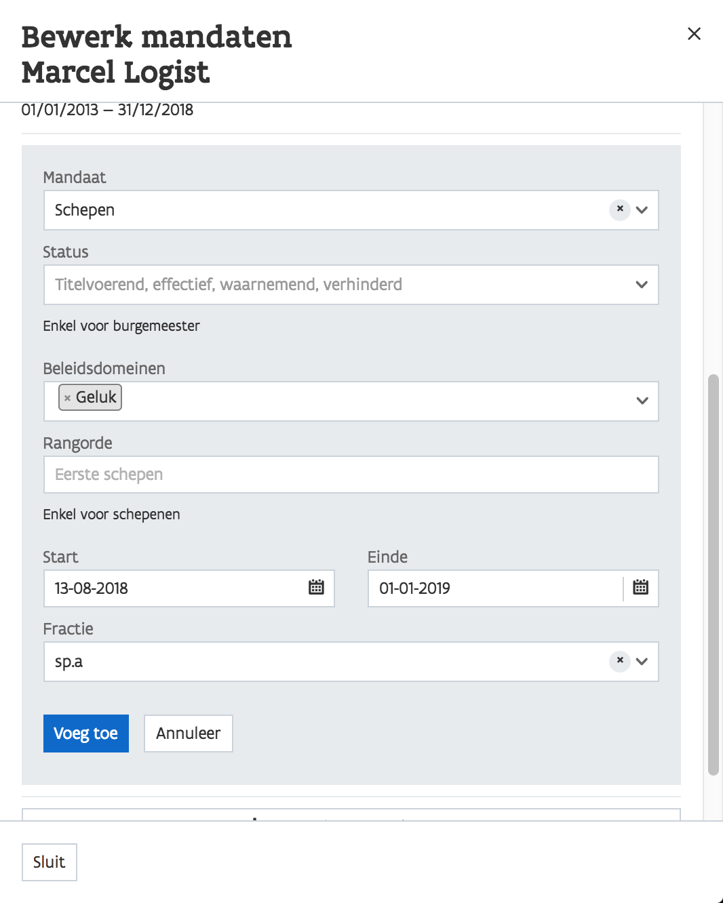
Het mandaat werd aangepast. De totalen zullen de huidige situatie reflecteren.

Vervolgens kan u de opvolger aanpassen in de mandatendatabank.
-
Zoek persoon 2
Zoek de opvolger van de burgemeester, persoon 2, en klik Bewerk. Dat opent een zijbalk waarin u al de mandaten van de mandataris kan zien.
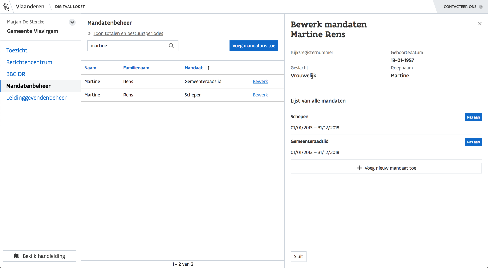
-
Beëindig het mandaat schepen van persoon 2
Zoek het mandaat Schepen en klik op Pas aan.

Kies Wijzig einde mandaat — het gaat hier om een wijziging in het mandaat, niet om een correctie, aangezien het mandaat van de persoon in kwestie stopgezet wordt.

Beëindig het mandaat, door het einde aan te passen naar de datum waarop het mandaat afloopt — dat is dezelfde datum waarop het mandaat burgemeesteer voor persoon 1 afloopt.
-
Geef een nieuw mandaat burgemeester aan persoon 2
Voeg vervolgens een nieuw mandaat toe.

Vul de gevraagde velden in: mandaat burgemeester, effectief, de juiste beleidsdomeinen, start, einde en fractie. De startdatum zal dezelfde zijn als de einddatum van het mandaat schepen voor deze persoon.

Het mandaat werd aangepast, en wordt nu getoond in de zijbalk en in de tabel (vernieuw de pagina indien u het niet dadelijk kan zien).
Beëindigen van het mandaat schepen zonder opvolger.
Een gemeente die met 7 schepenen start, maar het met één schepen minder doet na een ontslag tijdens de legislatuur.
-
Aanmelden
Meld u aan als een gemeente en navigeer naar mandatenbeheer.
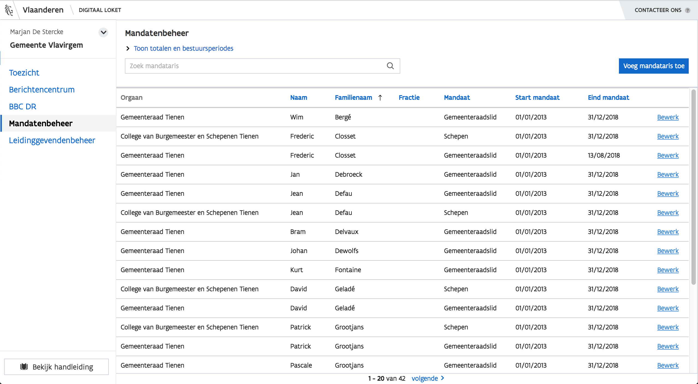
U kan de totalen bekijken door op de link Toon totalen en bestuursperiodes te klikken.
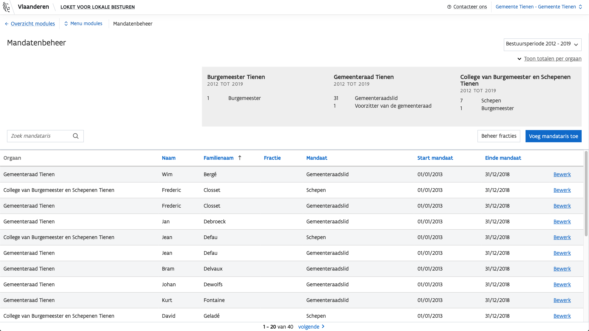
-
Zoek persoon
Zoek de mandataris waarvan u het mandaat schepen wil beëindigen, door de voor- of achternaam te typen in het zoekveld, of door te sorteren op mandaat.

Klik op Bewerk om de zijbalk te openen, waarin u al de mandaten van de mandataris kan zien.

-
Beëindig het mandaat schepen van de persoon
Klik op Pas aan bij het mandaat schepen.

Kies Wijzig einde mandaat — het gaat hier om een wijziging in het mandaat, niet om een correctie, aangezien het mandaat van de persoon in kwestie stopgezet wordt.

Beëindig het mandaat, door het einde aan te passen naar de datum waarop het mandaat afloopt.
-
De gemeente kan verder met 6 schepenen
Het mandaat werd aangepast. De tabel, de zijbalk en de totalen zullen de huidige situatie reflecteren.
De gemeente kan verder met 6 schepenen zonder probleem.
Leden aantallen
Momenteel wordt het maximum aantal leden niet meegenomen in deze applicatie. Besturen dienen zelf het juiste aantal onder controle te houden.
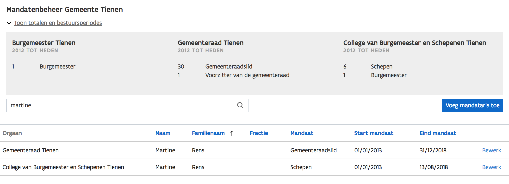
Titelvoerend burgemeester verhinderd, opgevolgd door een waarnemend burgemeester
Scenario: (voorbeeld uit deze legislatuur) Burgemeester Theo Francken van Lubbeek wordt tot staatssecretaris benoemd in de federale regering; Tania Roskams wordt waarnemend burgemeester vanaf 22.12.2014; zij wordt als schepen opgevolgd door Geert Bofyn; Theo Francken wordt titelvoerend burgemeester en blijft ook raadslid tijdens de ganse legislatuur.
-
Aanmelden
Meld u aan als de gemeente Lubbeek en navigeer naar mandatenbeheer.

-
Zoek naar Theo Francken
Zoek naar Theo Francken, en klik op Bewerk naast een van de mandaten om de mandaten aan te passen.
 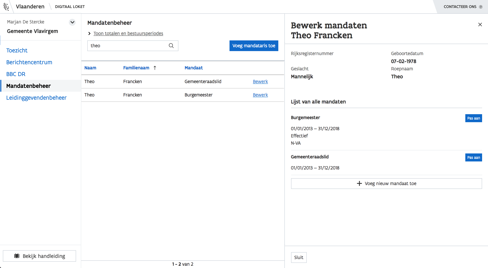
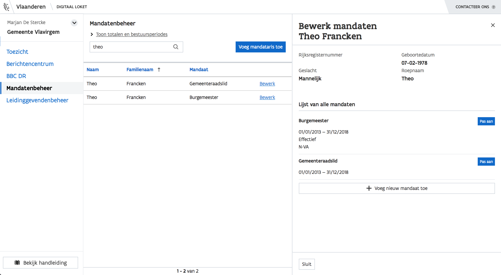
-
Beëindig mandaat burgemeester effectief voor Theo Francken
Zoek het mandaat Burgemeester, en klik Pas aan.
Dat kan door de voor- of achternaam te typen in het zoekveld, of door te sorteren op mandaat.
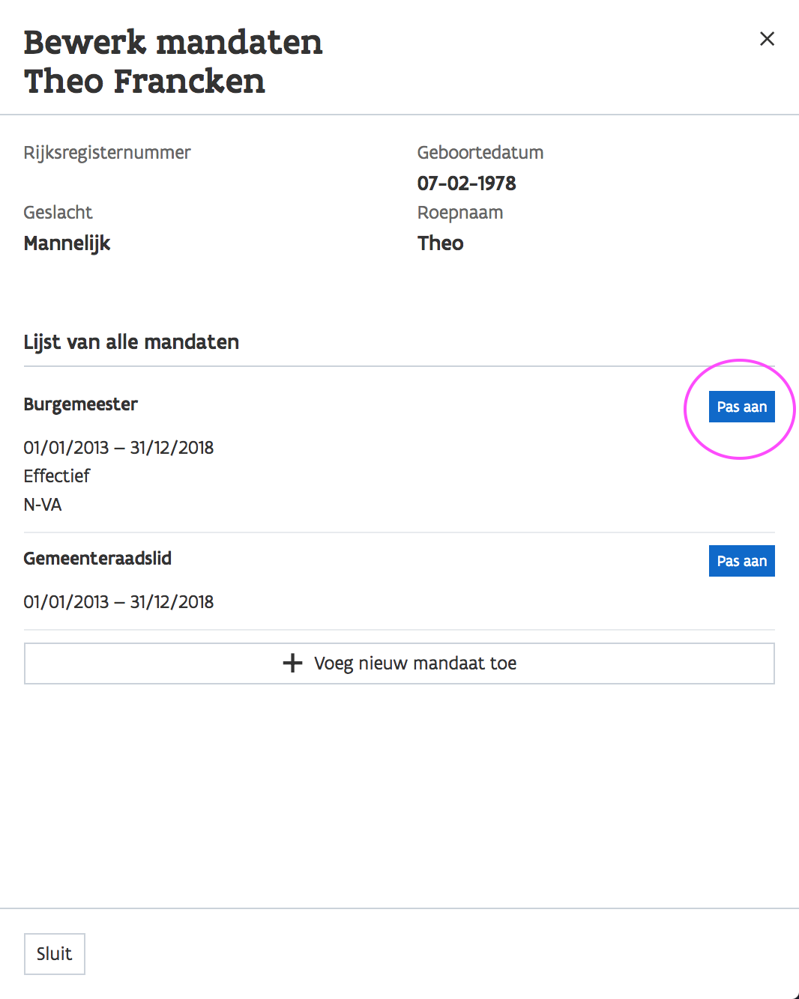
Kies Wijzig einde mandaat — het gaat hier om een wijziging in het mandaat, niet om een correctie, aangezien het mandaat een andere status krijgt.
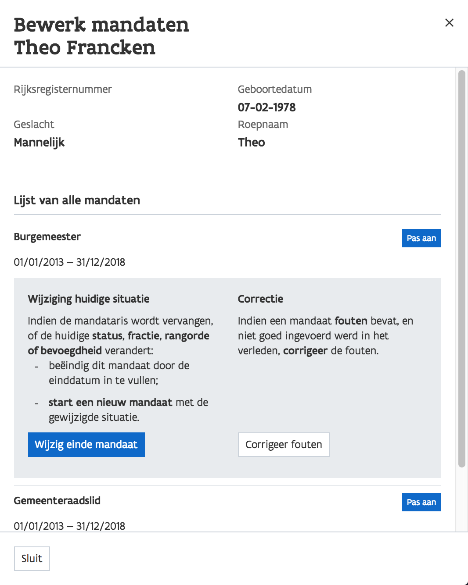
Beëindig het mandaat, door het einde aan te passen naar de datum waarop het mandaat burgemeester effectief afloopt, en dus titelvoerend kan beginnen.
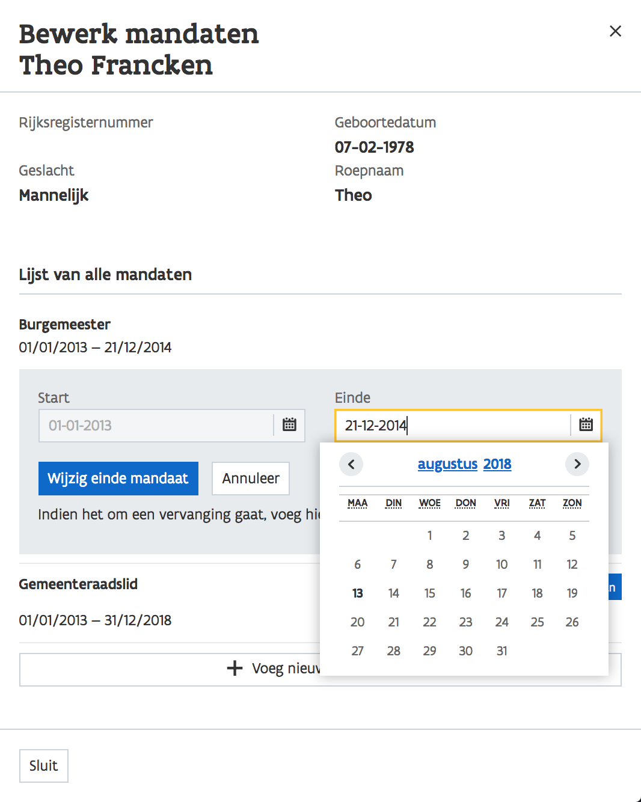
-
Voeg nieuw mandaat burgemeester titelvoerend toe aan Theo Francken
Klik Voeg nieuw mandaat toe om de nieuwe status van burgemeesterschap aan te duiden.

Voeg de status Titelvoerend toe van het nieuwe mandaat. De startdatum is het einde van het effectieve burgemeesterschap. De einddatum is tot het einde van de legislatuur (of tot wanneer er een opvolger is, ontslag, sterfte, ...)

-
Zoek naar Tania Roskams
Dat kan door de voor- of achternaam te typen in het zoekveld, of door te sorteren op mandaat.

Klik op Bewerk naast een van de mandaten om de mandaten aan te passen.

-
Beëindig het mandaat schepen voor Tania Roskams
Zoek het mandaat Schepen van Tania Roskams.
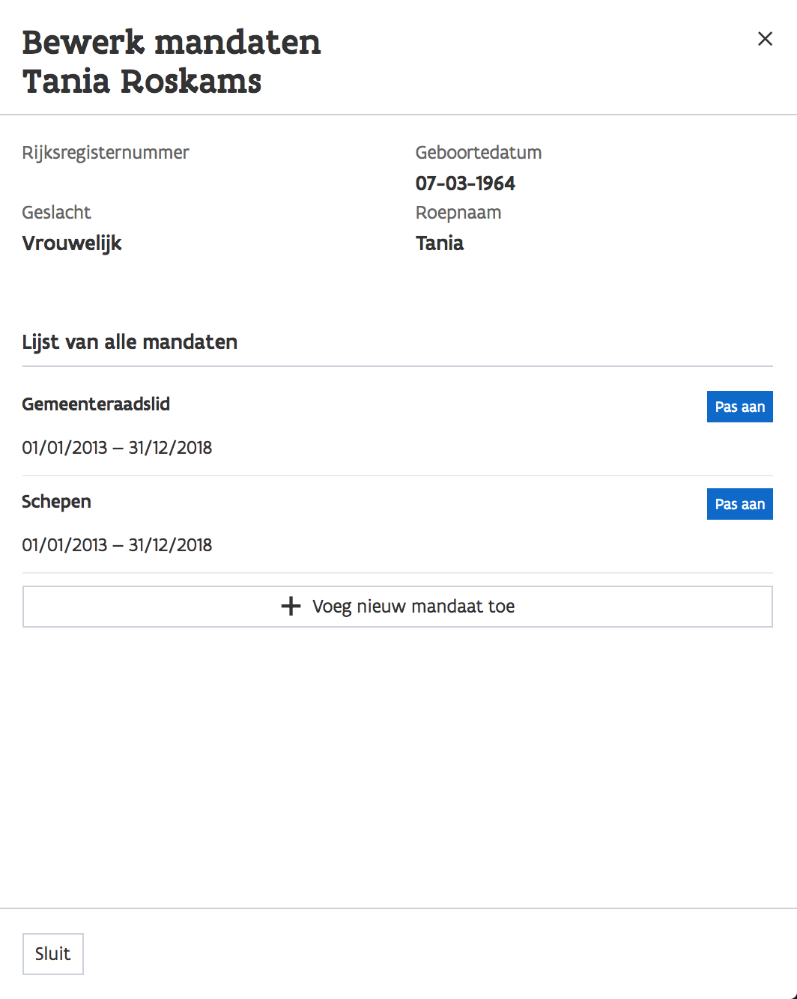
Kies Wijzig einde mandaat — het gaat hier om een wijziging in het mandaat, niet om een correctie, aangezien het mandaat van de persoon in kwestie stopgezet wordt.

Beëindig het mandaat, door het einde aan te passen naar de datum waarop het mandaat afloopt.
-
Voeg nieuw mandaat burgemeester waarnemend toe aan Tania Roskams
Nu er geen conflict meer is met het burgemeesterschap, kan een nieuw mandaat waarnemend Burgemeester toevoegd worden.

Kies Burgemeester en vul de gevraagde velden in met status waarnemend, de juiste beleidsdomeinen, start- en einddatum en fractie.

De startdatum is de het moment waarop Theo Francken als titelvoerend burgemeester start. De einddatum is tot het einde van de legislatuur (of tot wanneer er een opvolger is, ontslag, sterfte, ...)
-
Zoek naar Geert Bovyn
Dat kan door de voor- of achternaam te typen in het zoekveld, of door te sorteren op mandaat.
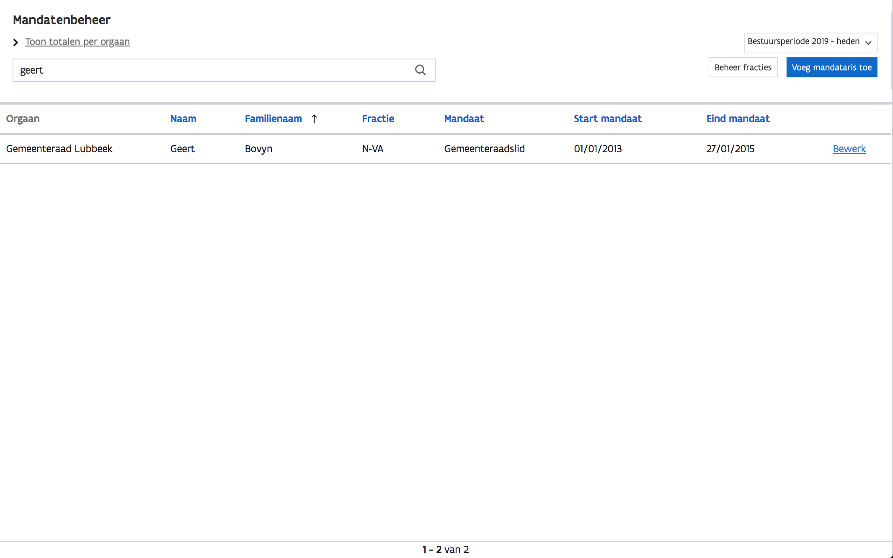
Klik op Bewerk naast een van de mandaten om de mandaten aan te passen.

-
Voeg het mandaat schepen toe voor Geert Bovyn, als opvolger van Tania Roskams.
Voeg een nieuw mandaat toe aan Geert Bovyn.

Kies Schepen en vul de gevraagde velden in met de juiste beleidsdomeinen, rangorde, start- en einddatum en fractie.
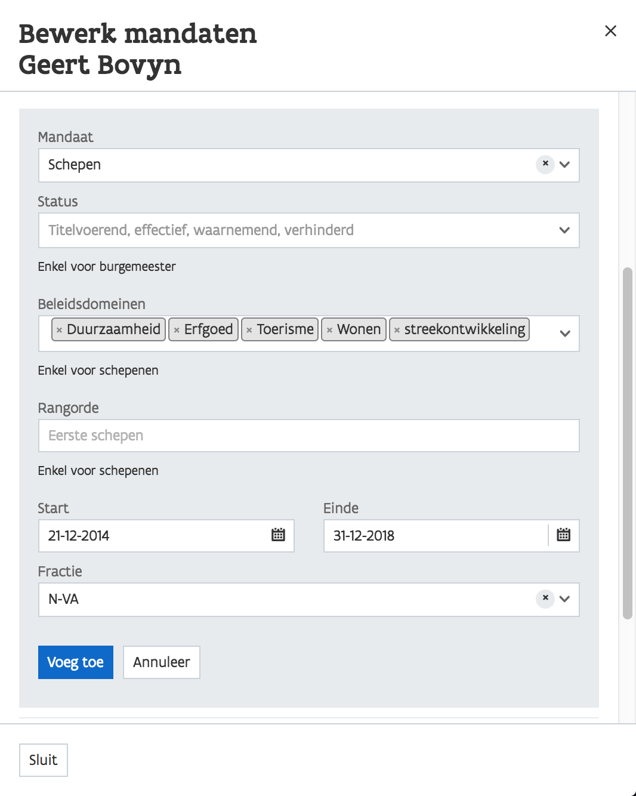
Het mandaat werd toegevoegd aan Geert Bovyn als opvolger van Tania Roskams. De totalen zullen de huidige situatie reflecteren.
Staan er fouten in deze handleiding? Neem contact op met support+lblod@redpencil.io.